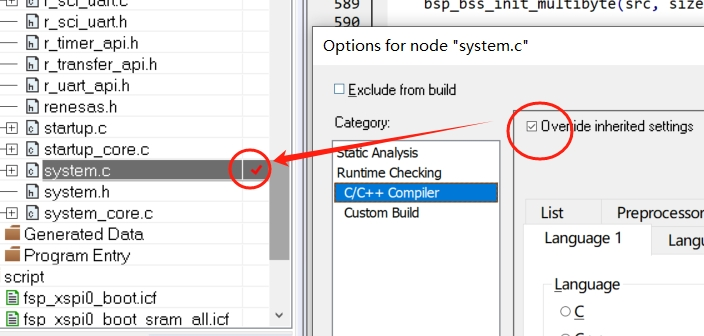
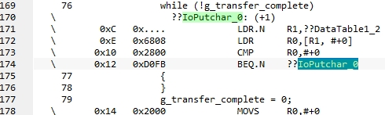
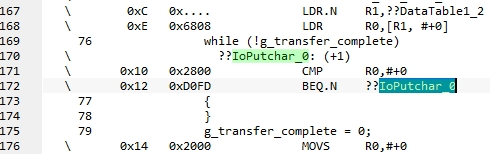
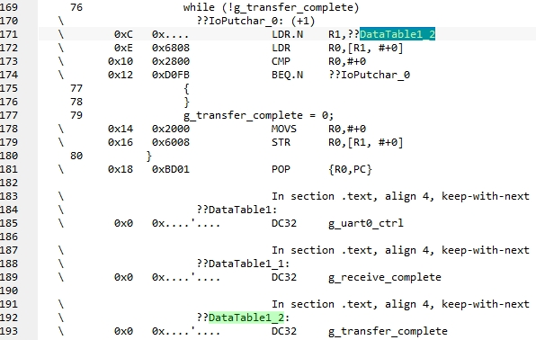
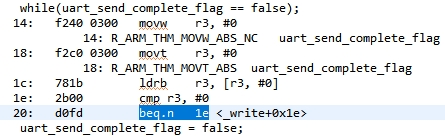
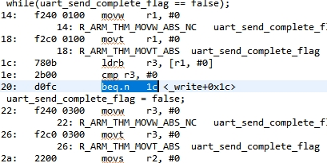
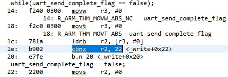
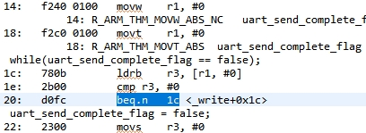
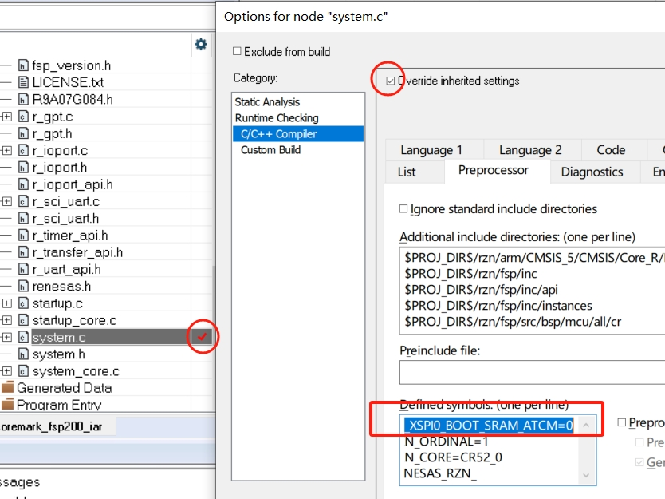

略
问题：内存复制相关代码被优化，导致无法初始化
#pragma GCC optimize ("O1")
#pragma GCC reset_options
#pragma optimize=low
深入浅出编译优化选项（上）:https://www.iar.com/zh/knowledge/learn/programming/compiler-optimization-1

问题：printf重定向的串口发送标志位，iar9.40.1错误的优化，volatile无效
volatile bool uart_send_complete_flag = false;
void user_uart_callback (uart_callback_args_t * p_args)
{
if(p_args->event == UART_EVENT_TX_COMPLETE)
{
uart_send_complete_flag = true;
}
}
void IoPutchar (int32_t buffer)
{
R_SCI_UART_Write(&g_uart0_ctrl, (uint8_t*) &buffer, TRANSFER_LENGTH);
while (!g_transfer_complete)
{
}
g_transfer_complete = 0;
}
| IAR优化等级 | 不使用 volatile |
使用 volatile |
|---|---|---|
Low |
 | |
Medium |
 | |
DataTable1_2 |
 |
volatile bool uart_send_complete_flag = false;
void user_uart_callback (uart_callback_args_t * p_args)
{
if(p_args->event == UART_EVENT_TX_COMPLETE)
{
uart_send_complete_flag = true;
}
}
_write(int fd, char *pBuffer, int size)
{
(void)fd;
fsp_err_t err = R_SCI_UART_Write(&g_uart0_ctrl, (uint8_t *)pBuffer, (uint32_t)size);
if(FSP_SUCCESS != err) __BKPT();
while(uart_send_complete_flag == false);
uart_send_complete_flag = false;
return size;
}
| gcc优化等级 | 不使用 volatile |
使用 volatile |
|---|---|---|
-O1 |
 |  |
-Ofast |
 |  |
需要单独优化的文件，需要预编译宏控制的文件，是同一个文件。那么预编译宏也要单独定义

iar icf与gcc ld文件对比：
语法较为复杂，整体逻辑不清晰；
不能自动递增地址，需要手动设置各个内存地址；
只支持文件的通配符，不支持文件夹目录的通配符；
工具生成的icf文件中符号命名不便于理解
例如：
include "memory_regions.icf"
例如：
define symbol SYSTEM_RAM_END_OFFSET = 0x00048000;
define symbol FLASH_ADDRESS = xSPI0_CS0_SPACE_PRV_START;
例如：
define region ATCM_region = mem:[from __region_ATCM_start__ to __region_ATCM_end__ ];
define region BTCM_region = mem:[from __region_BTCM_start__ to __region_BTCM_end__ ];
例如：
place in ROM_region { block USER_PRG_RBLOCK, readonly };
place in S_RAM_region { block USER_DATA_RBLOCK, block USER_DATA_NONCACHE_RBLOCK };
define block USER_PRG_RBLOCK with alignment = 4 { ro code };
define block USER_PRG_WBLOCK with alignment = 4 { rw code };
define block USER_DATA_ZBLOCK with alignment = 4 { section .bss };
initialize manually
do not initialize
嵌入式科普(22)c代码究竟是如何一步步运行的之链接---4.2 IAR .icf
略
略
\rzn2l_coremark_fsp200_iar\script\readme.txt
block PRG_RBLOCK ro code
block PRG_WBLOCK rw code
block DATA_ZBLOCK bss
block DATA_RBLOCK data
block DATA_WBLOCK data_init
initialize manually
do not initialize
hello word!
date:Jul 9 2024
time:10:12:22
file:C:\Users\jerry.chen\RASmartConfigurator\rzn2l_coremark_fsp200_iar\src\hal_entry.c
func:hal_entry,line:37
hello world!
PI=3.141593
check script ld first!!!
start coremain!!!
[10:16:25.284]收←◆2K performance run parameters for coremark.
CoreMark Size : 666
Total ticks : 18050
Total time (secs): 18.050000
Iterations/Sec : 1108.033241
Iterations : 20000
Compiler version : Please put compiler version here (e.g. gcc 4.1)
Compiler flags : Please put compiler flags here (e.g. -o3)
Memory location : STACK
seedcrc : 0xe9f5
[0]crclist : 0xe714
[0]crcmatrix : 0x1fd7
[0]crcstate : 0x8e3a
[0]crcfinal : 0x382f
Correct operation validated. See README.md for run and reporting rules.
CoreMark 1.0 : 1108.033241 / Please put compiler version here (e.g. gcc 4.1) Please put compiler flags here (e.g. -o3) / STACK
FSP_PRIV_CLOCK_CPU0=400000000
running!!!
[10:20:18.593]收←◆hello word!
date:Jul 9 2024
time:10:17:53
file:C:\Users\jerry.chen\RASmartConfigurator\rzn2l_coremark_fsp200_iar\src\hal_entry.c
func:hal_entry,line:37
hello world!
PI=3.141593
check script ld first!!!
start coremain!!!
[10:20:45.072]收←◆2K performance run parameters for coremark.
CoreMark Size : 666
Total ticks : 26459
Total time (secs): 26.459000
Iterations/Sec : 755.886466
Iterations : 20000
Compiler version : Please put compiler version here (e.g. gcc 4.1)
Compiler flags : Please put compiler flags here (e.g. -o3)
Memory location : STACK
seedcrc : 0xe9f5
[0]crclist : 0xe714
[0]crcmatrix : 0x1fd7
[0]crcstate : 0x8e3a
[0]crcfinal : 0x382f
Correct operation validated. See README.md for run and reporting rules.
CoreMark 1.0 : 755.886466 / Please put compiler version here (e.g. gcc 4.1) Please put compiler flags here (e.g. -o3) / STACK
FSP_PRIV_CLOCK_CPU0=400000000
running!!!
[10:23:06.511]收←◆hello word!
date:Jul 9 2024
time:10:21:49
file:C:\Users\jerry.chen\RASmartConfigurator\rzn2l_coremark_fsp200_iar\src\hal_entry.c
func:hal_entry,line:37
hello world!
PI=3.141593
check script ld first!!!
start coremain!!!
[10:23:40.199]收←◆2K performance run parameters for coremark.
CoreMark Size : 666
Total ticks : 33667
Total time (secs): 33.667000
Iterations/Sec : 594.053524
Iterations : 20000
Compiler version : Please put compiler version here (e.g. gcc 4.1)
Compiler flags : Please put compiler flags here (e.g. -o3)
Memory location : STACK
seedcrc : 0xe9f5
[0]crclist : 0xe714
[0]crcmatrix : 0x1fd7
[0]crcstate : 0x8e3a
[0]crcfinal : 0x382f
Correct operation validated. See README.md for run and reporting rules.
CoreMark 1.0 : 594.053524 / Please put compiler version here (e.g. gcc 4.1) Please put compiler flags here (e.g. -o3) / STACK
FSP_PRIV_CLOCK_CPU0=400000000
running!!!